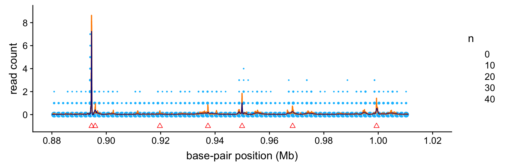

Last updated: 2018-10-18
workflowr checks: (Click a bullet for more information) ✔ R Markdown file: up-to-date
Great! Since the R Markdown file has been committed to the Git repository, you know the exact version of the code that produced these results.
✔ Environment: empty
Great job! The global environment was empty. Objects defined in the global environment can affect the analysis in your R Markdown file in unknown ways. For reproduciblity it’s best to always run the code in an empty environment.
✔ Seed:
set.seed(1)
The command set.seed(1) was run prior to running the code in the R Markdown file. Setting a seed ensures that any results that rely on randomness, e.g. subsampling or permutations, are reproducible.
✔ Session information: recorded
Great job! Recording the operating system, R version, and package versions is critical for reproducibility.
✔ Repository version: 90e3ac9
wflow_publish or wflow_git_commit). workflowr only checks the R Markdown file, but you know if there are other scripts or data files that it depends on. Below is the status of the Git repository when the results were generated:
Ignored files:
Ignored: dsc/code/Wavelab850/MEXSource/CPAnalysis.mexmac
Ignored: dsc/code/Wavelab850/MEXSource/DownDyadHi.mexmac
Ignored: dsc/code/Wavelab850/MEXSource/DownDyadLo.mexmac
Ignored: dsc/code/Wavelab850/MEXSource/FAIPT.mexmac
Ignored: dsc/code/Wavelab850/MEXSource/FCPSynthesis.mexmac
Ignored: dsc/code/Wavelab850/MEXSource/FMIPT.mexmac
Ignored: dsc/code/Wavelab850/MEXSource/FWPSynthesis.mexmac
Ignored: dsc/code/Wavelab850/MEXSource/FWT2_PO.mexmac
Ignored: dsc/code/Wavelab850/MEXSource/FWT_PBS.mexmac
Ignored: dsc/code/Wavelab850/MEXSource/FWT_PO.mexmac
Ignored: dsc/code/Wavelab850/MEXSource/FWT_TI.mexmac
Ignored: dsc/code/Wavelab850/MEXSource/IAIPT.mexmac
Ignored: dsc/code/Wavelab850/MEXSource/IMIPT.mexmac
Ignored: dsc/code/Wavelab850/MEXSource/IWT2_PO.mexmac
Ignored: dsc/code/Wavelab850/MEXSource/IWT_PBS.mexmac
Ignored: dsc/code/Wavelab850/MEXSource/IWT_PO.mexmac
Ignored: dsc/code/Wavelab850/MEXSource/IWT_TI.mexmac
Ignored: dsc/code/Wavelab850/MEXSource/LMIRefineSeq.mexmac
Ignored: dsc/code/Wavelab850/MEXSource/MedRefineSeq.mexmac
Ignored: dsc/code/Wavelab850/MEXSource/UpDyadHi.mexmac
Ignored: dsc/code/Wavelab850/MEXSource/UpDyadLo.mexmac
Ignored: dsc/code/Wavelab850/MEXSource/WPAnalysis.mexmac
Ignored: dsc/code/Wavelab850/MEXSource/dct_ii.mexmac
Ignored: dsc/code/Wavelab850/MEXSource/dct_iii.mexmac
Ignored: dsc/code/Wavelab850/MEXSource/dct_iv.mexmac
Ignored: dsc/code/Wavelab850/MEXSource/dst_ii.mexmac
Ignored: dsc/code/Wavelab850/MEXSource/dst_iii.mexmac
Untracked files:
Untracked: analysis/chipseq.R
An illustration of “smoothing via adaptive shrinkage” (SMASH) applied to chromatin immunoprecipitation sequencing (“ChIP-seq”) data. This implements the SMASH analysis presented in Sec. 5.2 of the manuscript.
We begin by loading the smashr, ggplot2 and cowplot packages, as well as some additional functions used to implement the analysis below.
source("../code/chipseq.functions.R")
library(smashr)
library(ggplot2)
library(cowplot)
#
# Attaching package: 'cowplot'
# The following object is masked from 'package:ggplot2':
#
# ggsaveThe ChIP-seq data are sequencing read counts for transcription factor YY1 in cell line GM12878, restricted to 880,001–1,011,072 bp on chromosome 1. These data were collected as part of the ENCODE (“Encyclopedia Of DNA Elements”) project.
load("../data/reg_880000_1011072.RData")
bppos <- 880001:1011072
counts <- M[1,] + M[,2]Note that there are two replicates of the GM12878 cell line, so we analyze the combined read counts from both replicates, stored in the counts vectors.
Next, we apply SMASH to the read counts to estimate the mean and variance of the underlying signal. It may take several minutes to complete this step.
res <- smash.poiss(counts,post.var = TRUE)To provide a “baseline” to compare against the SMASH estimates, we retrieve the peaks identified in the same ChIP-seq data using the MACS software.
macs.file <- "../data/Gm1287peaks_chr1_sorted.txt"
peaks <- read.macs.peaks(macs.file,min(bppos),max(bppos))TO DO: Describe what is being shown in the plot.
create.chipseq.plot(bppos/1e6,counts,res$est,(peaks$start + peaks$end)/2e6,
nbreaks = 10) +
scale_x_continuous(limits = c(0.88,1.02),breaks = seq(0.88,1.02,0.02)) +
scale_y_continuous(limits = c(-1,9),breaks = seq(0,8,2))
sessionInfo()
# R version 3.4.3 (2017-11-30)
# Platform: x86_64-apple-darwin15.6.0 (64-bit)
# Running under: macOS High Sierra 10.13.6
#
# Matrix products: default
# BLAS: /Library/Frameworks/R.framework/Versions/3.4/Resources/lib/libRblas.0.dylib
# LAPACK: /Library/Frameworks/R.framework/Versions/3.4/Resources/lib/libRlapack.dylib
#
# locale:
# [1] en_US.UTF-8/en_US.UTF-8/en_US.UTF-8/C/en_US.UTF-8/en_US.UTF-8
#
# attached base packages:
# [1] stats graphics grDevices utils datasets methods base
#
# other attached packages:
# [1] cowplot_0.9.3 ggplot2_3.0.0 smashr_1.2-0
#
# loaded via a namespace (and not attached):
# [1] Rcpp_0.12.19 bindr_0.1.1 pillar_1.2.1
# [4] plyr_1.8.4 compiler_3.4.3 git2r_0.23.0
# [7] workflowr_1.1.1 R.methodsS3_1.7.1 R.utils_2.6.0
# [10] bitops_1.0-6 iterators_1.0.9 tools_3.4.3
# [13] digest_0.6.17 tibble_1.4.2 evaluate_0.11
# [16] gtable_0.2.0 lattice_0.20-35 pkgconfig_2.0.2
# [19] rlang_0.2.2 Matrix_1.2-12 foreach_1.4.4
# [22] yaml_2.2.0 parallel_3.4.3 bindrcpp_0.2.2
# [25] withr_2.1.2 dplyr_0.7.6 stringr_1.3.1
# [28] knitr_1.20 REBayes_1.3 caTools_1.17.1
# [31] tidyselect_0.2.4 rprojroot_1.3-2 grid_3.4.3
# [34] glue_1.3.0 data.table_1.11.4 R6_2.2.2
# [37] rmarkdown_1.10 purrr_0.2.5 ashr_2.2-19
# [40] magrittr_1.5 whisker_0.3-2 backports_1.1.2
# [43] scales_0.5.0 codetools_0.2-15 htmltools_0.3.6
# [46] MASS_7.3-48 assertthat_0.2.0 colorspace_1.4-0
# [49] labeling_0.3 wavethresh_4.6.8 stringi_1.2.4
# [52] Rmosek_8.0.69 lazyeval_0.2.1 doParallel_1.0.11
# [55] pscl_1.5.2 munsell_0.4.3 truncnorm_1.0-8
# [58] SQUAREM_2017.10-1 R.oo_1.21.0This reproducible R Markdown analysis was created with workflowr 1.1.1